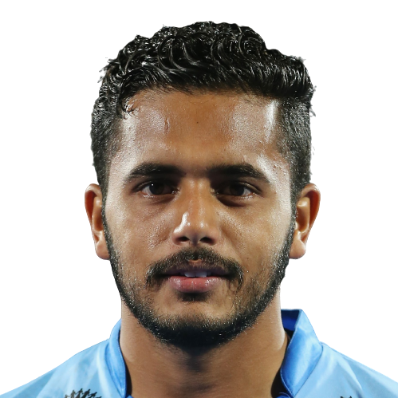
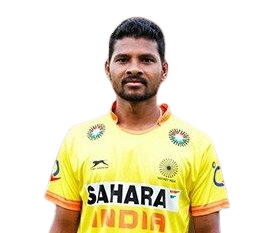
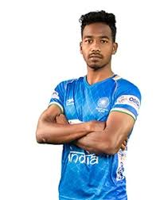
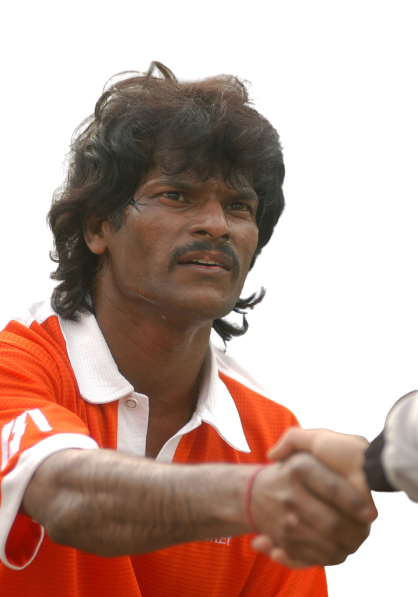
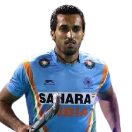
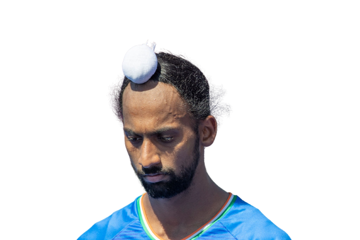
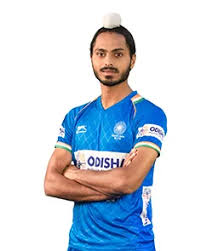
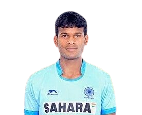
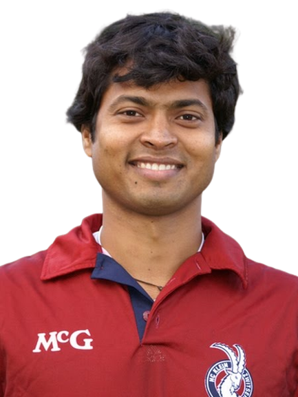
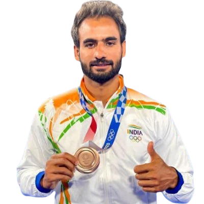

| INFORMATION ABOUT HOCKEY |
Hockey is a term used to denote a family of various types of both summer and winter team sports which originated on either an outdoor field, sheet of ice, or dry floor such as in a gymnasium. While these sports vary in specific rules, numbers of players, apparel and, notably, playing surface, they share broad characteristics of two opposing teams using a stick to propel a ball or disk into a goal.There are many types of hockey. Some games make the use of skates, either wheeled, or bladed while others do not. In order to help make the distinction between these various games, the word "hockey" is often preceded by another word i.e. "field hockey", "ice hockey", "roller hockey", "rink hockey", or "floor hockey".In each of these sports, two teams play against each other by trying to manoeuvre the object of play, either a type of ball or a disk (such as a puck), into the opponent's goal using a hockey stick. Two notable exceptions use a straight stick and an open disk (still referred to as a "puck") with a hole in the center instead. The first case is a style of floor hockey whose rules were codified in 1936 during the Great Depression by Canada's Sam Jacks. The second case involves a variant which was later modified in roughly the 1970s to make a related game that would be considered suitable for inclusion as a team sport in the newly emerging Special Olympics. The floor game of gym ringette, though related to floor hockey, is not a true variant due to the fact that it was designed in the 1990s and modelled off of the Canadian ice skating team sport of ringette, which was invented in Canada in 1963. Ringette was also invented by Sam Jacks, the same Canadian who codified the rules for the open disk style of floor hockey 1936.Certain sports which share general characteristics with the forms of hockey, but are not generally referred to as hockey include Lacrosse, Hurling, Camogie and Shinty.
1) Hockey lates news:-
2) Field Hockey information:-
3) Official Website Of Hockey India:-
| PLAYERS |
 Manpreet Singh (Captn) Manpreet Singh (Captn)
Manaprit singh is an Indian field hockey player. He led the Indian field hockey team to the bronze medal at the Tokyo 2020 Olympics. He plays as a halfback. He first played for India in 2011 at the age of 19. He represented India at the 2012 Summer Olympics and was named Asia's Junior Player of the Year in 2014 |

Harmanpreet Singh
Harmaprit Singh is an Indian field hockey player who plays as a defender for the Indian national team and also captains the national team. He was part of the hockey team that won the bronze medal for India in Tokyo 2020 Summer Olympic Games. He was named in the Indian squad for the 2016 Summer Olympics. |
 Surender Kumar
Surender Kumar
Surender Kumaris an Indian field hockey player, who plays as a defender for the Indian national team. He was born to Malkhan Singh and Neelam Devi on 23 November 1993. He is from Karnal, Haryana. He was part of the Indian hockey team that participated in the 2016 and 2020 Summer Olympics. |
 Krishan
Pathak Krishan
Pathak
Krishan Bahadur Pathak is an Indian field hockey player who plays as a goalkeeper for the Indian national team |
 Nilakanta Sharma
Nilakanta Sharma
Nilakanta Sharma an Indian field hockey player who plays as a midfielder for the Indian national team. He was part of the Indian squad that won the 2016 Men's Hockey Junior World Cup |
 Mandeep
Singh Mandeep
Singh
Mandeep Singh an Indian professional field hockey player who currently plays as a forward for Delhi Waveriders in the Hockey India League and the India men's national field hockey team |
 PR .Sreejesh PR .Sreejesh
PR .Sreejesh an Indian professional field hockey player who plays as a goalkeeper and former captain of the Indian national team. He plays in the Hockey India League for Uttar Pradesh Wizards. |
 Lalit
Kumar Upadhyay Lalit
Kumar Upadhyay
Lalit Kumar Upadhyay is an Indian field hockey player who plays as a forward for the India national team. He was a member of the Indian team that won the bronze medal at the 2020 Olympic Games. |
Birendra Lakra >Birendra Lakra is an Indian professional field hockey player. He represents India in men's field hockey and recently came out of retirement alongside Rupinderpal Singh and will be the Captain of Indian team in the Asia Cup to be held in Jakarta, Indonesia |
| Dipsan
Tirkey
Dipsan Tirkey an Indian field hockey player who plays as a defender. He was the vice-captain of the Indian squad that won the 2016 Men's Hockey Junior World Cup. |
 Suraj
Karkera Suraj
Karkera
Suraj Karkera an Indian field hockey player who plays as a goalkeeper. |
Dhanraj
Pillay
Dhanraj Pillay is a retired Indian field hockey player and former captain of the India national team. He also looks after the Air India Sports Promotion Board as a Joint Secretary based in Mumbai. For the last 5 years, Dhanraj is overseeing the SAG Hockey Academy in Gujarat funded by the Gujarat Government |
| Dharamvir
Singh
Dharamvir Singh India in Men's Hockey during the 2012 London Olympics. He was part of the Indian team that won the silver medal at the 2014 Commonwealth Games. He supports Indian Collegiate Athletic Program and has agreed to be a mentor for Hockey. |
 Vivek
Sagar Prasad Vivek
Sagar Prasad
Vivek Sagar Prasad is an Indian field hockey player who plays as a midfielder for the Indian national team. In January 2018, he became the second-youngest player ever to debut for India at 17 years, 10 months and 22 days. At the 2019 Hockey Stars Awards, Prasad was named the FIH Rising Star of the Year |
Hardik
Singh
Hardik Singh is an Indian field hockey player who plays as a midfielder for the Indian national team |
| Gursahibjit
Singh
Gursahibjit Singh an Indian field hockey player who plays as a forward for the national team. Six months after representing India Under-21 at the 2018 Sultan of Johor Cup, he made his senior team debut at the 2019 Sultan Azlan Shah Cup. |
 Nilam
Sanjeep Xess Nilam
Sanjeep Xess
Nilam Sanjeep Xess an Indian field hockey player who plays as a defender. He made his international debut for the national senior team at the 2016 South Asian Games. He captained India at the 2016 Boys Under-18 Asia Cup. |
 Shamsher Singh Shamsher Singh
hamsher Singh is an Indian field hockey player who plays as a forward. He made his international debut for the national senior team at the 2019 Men's Ready Steady Tokyo Hockey Tournament. |
| Amit
Rohidas
Amit Rohidas is an Indian field hockey player from Odisha. He plays as a defender for the Indian national team and is also the vice-captain of the team. He was a part of the Indian squad that won the bronze medal at the 2020 Summer Olympics. |
Dilip
Tirkey
Tirkey, is a former Indian field hockey player, politician and sports administrator. His former playing position was of full back. He was best known for his penalty corner hi |
 Simranjeet Singh Simranjeet Singh
Singh is an Indian field hockey player who plays as a midfielder for the Indian national team. He was part of the Indian squad that won the 2016 Men's Hockey Junior World Cup. He made his senior team debut in 2018 and was part of India's silver medal winning team at the 2018 Men's Hockey Champions Trophy. |
 Varun Kumar Varun Kumar
Kumaris an Indian professional field hockey player who plays as a defender for Punjab Warriors in the Hockey India League and the Indian national team |
Gurjant
Singh
Gurjant Singh is an Indian field hockey player who plays as a Forward. He was part of the Indian squad which won gold at 2016 Men's Hockey Junior World Cup in Lucknow, India. |
 Ramandeep
Singh Ramandeep
Singh
Ramandeep Singh is an Indian field hockey player who plays as a forward. He was named in the Indian squad for the 2016 Summer Olympics |
| HISTORY |
Games played with curved sticks and a ball can be found in the histories of many cultures. In Egypt, 4000-year-old carvings feature teams with sticks and a projectile, hurling dates to before 1272 BC in Ireland, and there is a depiction from approximately 600 BC in Ancient Greece, where the game may have been called kerētízein because it was played with a horn or horn-like stick In Inner Mongolia, the Daur people have been playing beikou, a game similar to modern field hockey, for about 1,000 years. Most evidence of hockey-like games during the Middle Ages is found in legislation concerning sports and games. The Galway Statute enacted in Ireland in 1527 banned certain types of ball games, including games using "hooked" (written "hockie", similar to "hooky") sticks. ...at no tyme to use ne occupye the horlinge of the litill balle with hockie stickes or staves, nor use no hande ball to play withoute walles, but only greate foote balle[13] "Bandy, . a game, like that of Golf, in which the ad- verse parties endeavour to beat a ball (generally a knob or gnarl from the trunk of a tree,) opposite ways...the stick with which the game is played is crook'd at the end;." [1] mid C18th Devon. By the 19th century, the various forms and divisions of historic games began to differentiate and coalesce into the individual sports defined today. Organizations dedicated to the codification of rules and regulations began to form, and national and international bodies sprang up to manage domestic and international competition.
| HOCKEY RULE |

1) Hockey players can only hit the ball with the flat side of their stick.
2) Hockey players (other than the goalkeeper) are not allowed to use their feet, or any other parts of the body, to control the ball at any time.
3) A goal can only be scored either from a field goal, a penalty corner, or from a penalty stroke. A field goal is a goal scored from open play, and can only be scored from inside the 'striking circle', in front of the opponent's goal. If the hockey ball is hit from outside the circle and goes into the goal, it does not count as a goal.
4) Hockey players may not trip, push, charge, interfere with, or physically handle an opponent in any way. Hockey is a non-contact sport and all fouls result in a free hit or a 'penalty corner' for the non-offending team depending on where the infringement took place and the severity of the foul.
| Equipment |
Hockey stick and ball are the most important equipment without which the sport cannot be played. There are many other equipment like shin guard, helmet, glove, shoes, etc., that a hockey player uses during the match.
The following are the equipment used in the hockey game by the goalie and the players.
Hockey Stick -It is a wooden stick with length varying from 26"to 38.5"depending on height of the player. The bat has a hooked shape at the head. There are mostly four types of variations namely shorti, midi, maxi and the J Hook depending on the efficiency of the player holding the ball. The shorti type is used by players, who take an extreme control over the ball to increase the manoeuvrability. Generally, the players at the mid field position use this type of bat in the game.
The midi type is used by the players who hit the ball more often and need to be strong on the reverse side. Strikers use midi predominantly.
The maxi type is used by the players who act as defenders or attackers. This bat is similar to the midi type but the surface area is being increased. For stopping the ball, its strength allows it to be much more efficient in doing that.
The J Hook type has a much larger surface area. However, it doesn't possess the efficiency of the midi type in striking the ball. But, for stopping the ball it has an increased thickness. This head type is preferred by the defenders.
Ball- The hockey ball is a plastic spherical shaped material made of cork core usually white colored. The color varies based on the color of the ground on which the game is played. The circumference of the ball is generally 224 to 235mm. It weighs around 156 to 163gms. To reduce aquaplaning, the ball is covered with indentations so that on wet grounds the inconsistent ball speed cannot occur.
Shin guards - It is worn in front of a player's shin for protection from injury.
Mouth guards - It is to protect the mouth and teeth during the game while playing.
Helmet and throat protector - These equipment are used to protect head and throat from getting injured.
Cleats (Shoes) - There are special types of shoes which enhance the free walk and run over the ground.
Goggles, Gloves, Head bands - Goggles and gloves are used by the goalies whereas; head bands are used by the players except the goal keepers.
Goalie sticks and heads - For hitting the ball and striking it, the goal keepers use a different type of bat.
Face Mask - It is one of the latest equipment in hockey. It exposes only the eyes and covers rest of the face. Again, this is also made of fiber. It has elastic band or belt to fit firmly.
Body Pad or Chest Protector -The body pad covers the ribs from getting hurt. This is worn inside the uniform.
Pads -The pads are worn to protect knees and lower part of limbs.
Kicker -Kicker is a unique show used by goalkeepers. They are strong enough to protect the toes when goalkeeper tries to kick or block the ball to prevent goal.
These are the equipment used for playing hockey and most of the equipment are used by the goalkeepers. The goalkeeper is given much protection in comparison to other players as they have to move continuously and weight of the equipment may slow down their movement